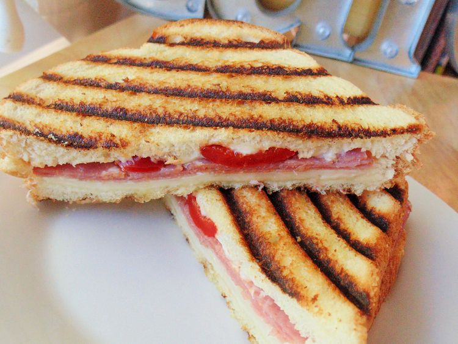

Panini

Description
After tweaking this recipe for several years, this recepi is the one!
Ingredients
- 1 teaspoon mayonnaise, or to taste
- 2 slices Italian bread
- 4 slices chorizo
- 3 slices mozzarella
- 1 slice roasted red bell pepper
Directions
- Spread mayonnaise onto one side of each bread slice. Layer chorizo, mozzarella cheese and roasted bell pepper.
- Heat the panini in a toastiron or in the oven on 225 degrees for 5-10 minutes